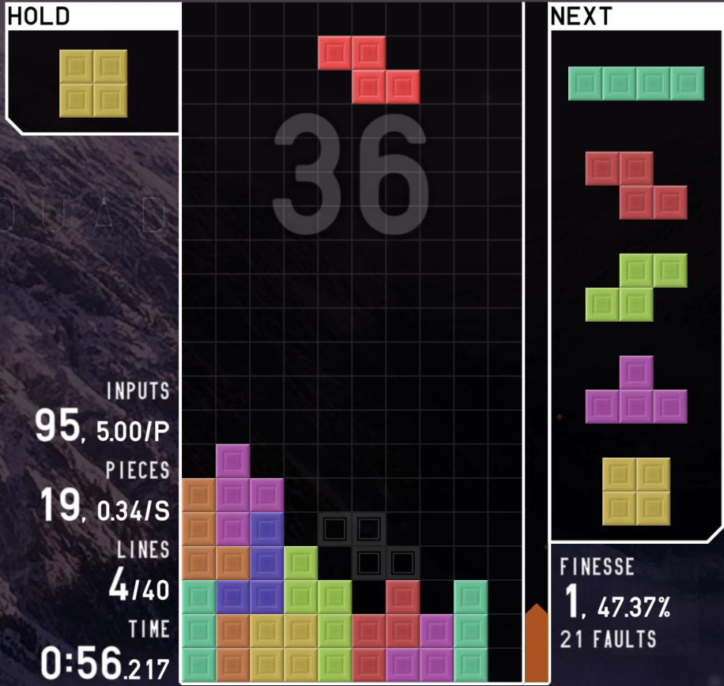

Gaming
Tijdens mijn vrije tijd game ik vaak de hele dag (en nacht) door! Games die ik graag speel op dit moment:
-
Multi-player shooter spel, Ik speel voornamelijk de zombies modus.

-
Een Tetris browserspel, moderne tetris in een browser. Er is ook een client.
